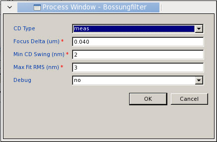

Focus-sensitive
data is of particular interest in model calibration. The Calibre
nmModelflow GUI has the capability to filter out test structures
that meet certain criteria.
Prerequisites
An
active super gauge data object loaded into Calibre nmModelflow and
the corresponding test pattern design file loaded into Calibre WORKbench
An
active litho model to test against the gauges with generated process models
(see “Adding Process Window Conditions to a Litho Model”)
Procedure
- Switch to the Process
Window menu bar tab.
- If the Simulate
All button (located on the right side of the Process
Window tab) is orange, click it to update the simulated
CDs across the process window.
Tip If the Simulate
All button is transparent, it means that the simulations
have not been updated for the active data set. Click the Simulate
All button to update.
The simulation runs and updates
the gauge data in the Gauge Analysis tab.
- Click the Filtbossung button,
located on the left side of the Process Window tab.
- In the Process Window, Bossungfilter
dialog box that appears, fill out the fields as appropriate and
click OK.
Figure 1. Process Window, Bossungfilter
Dialog Box
The Bossung filter command
runs. Only gauges that meet the Bossung filtering criteria remain
enabled.
- Raise the Cross
Probe & Filter tab.
- Click the Enabled button
to filter the gauges so that only the enabled gauges are shown.
- (Optional) Save the filtered
data set to a file or to the database for future use.
Figure 2. Cross-Probe &
Filter Tab
Results
The filtering affects all of the process
window conditions. If you switch the active process window condition
(by double-clicking on its cell in the panel) you will see only
the enabled gauges.
For example, double-clicking on the
“7” cell at 0.06 Focus, 1.0 Dose in the matrix changes the Gauge
Analysis tab contents to a view that shows only seven gauge objects
with the simulation results at that dose and focus condition.
The Application Log window shows the
results summary from the data filtering.
The filtered dataset can be saved
to file or to the database for future use.
Note: To return only the most focus-sensitive
gauges, a CLI-only option is available using the “mdf pw bossungfilter”
CLI command with the -num option. However, note that this option
is incompatible with Min CD Swing and Max Fit RMS options.